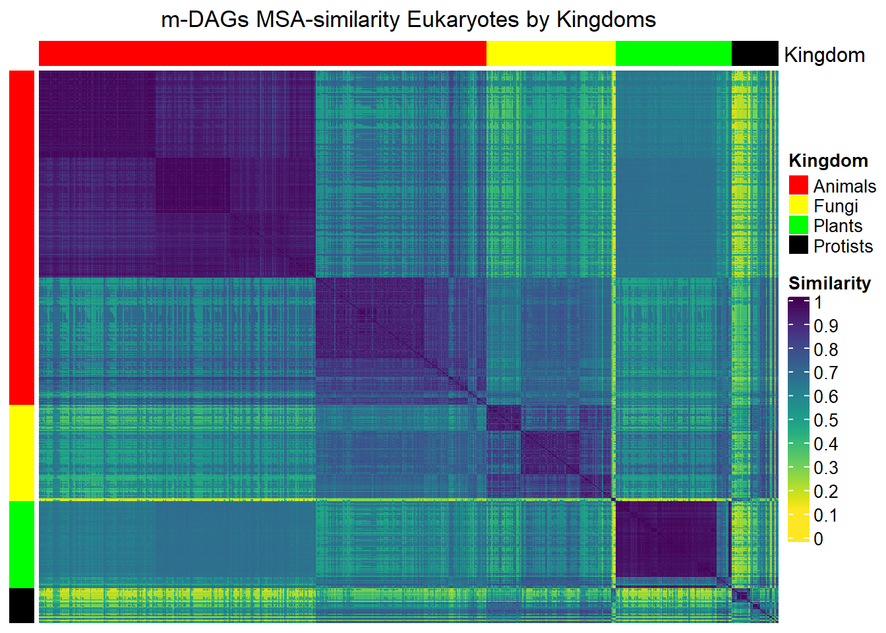
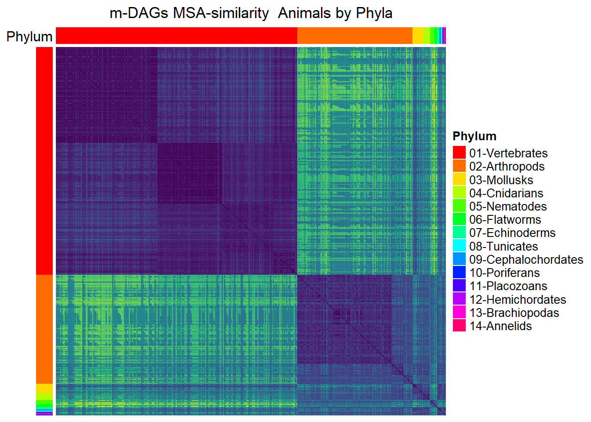
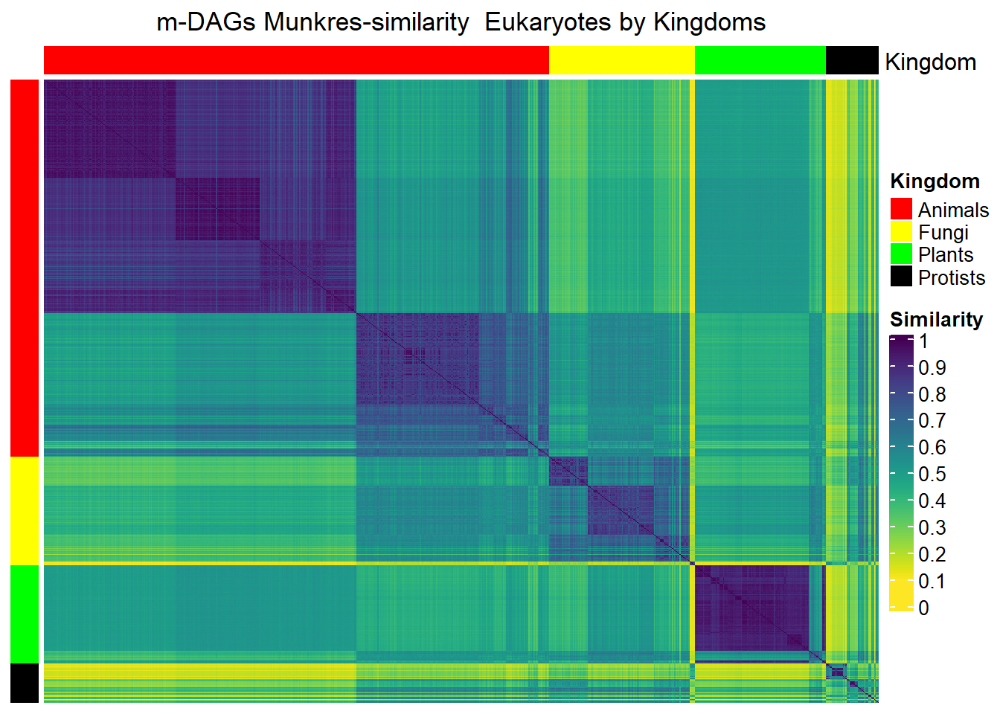
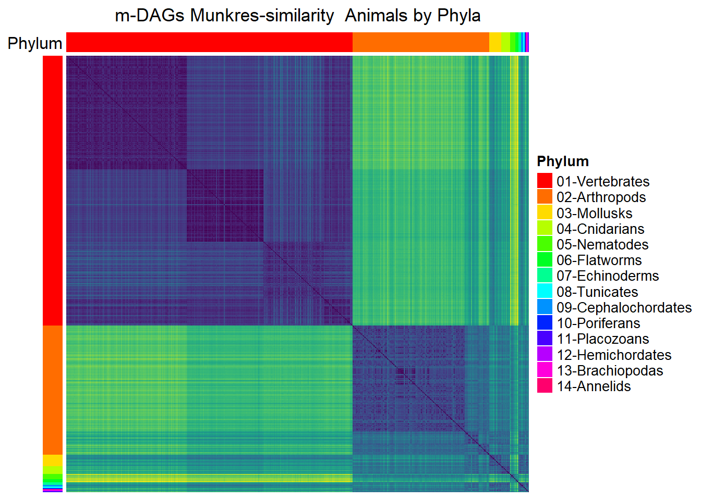
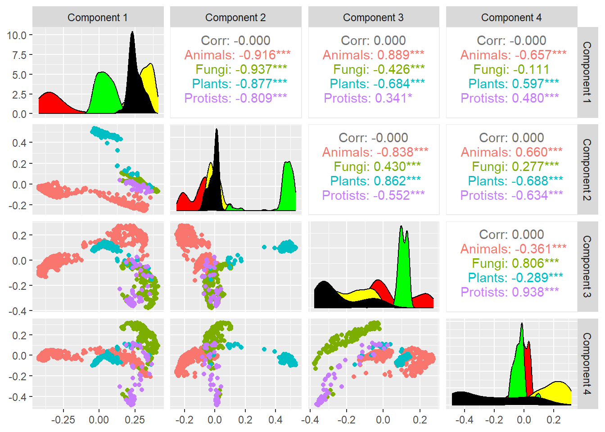
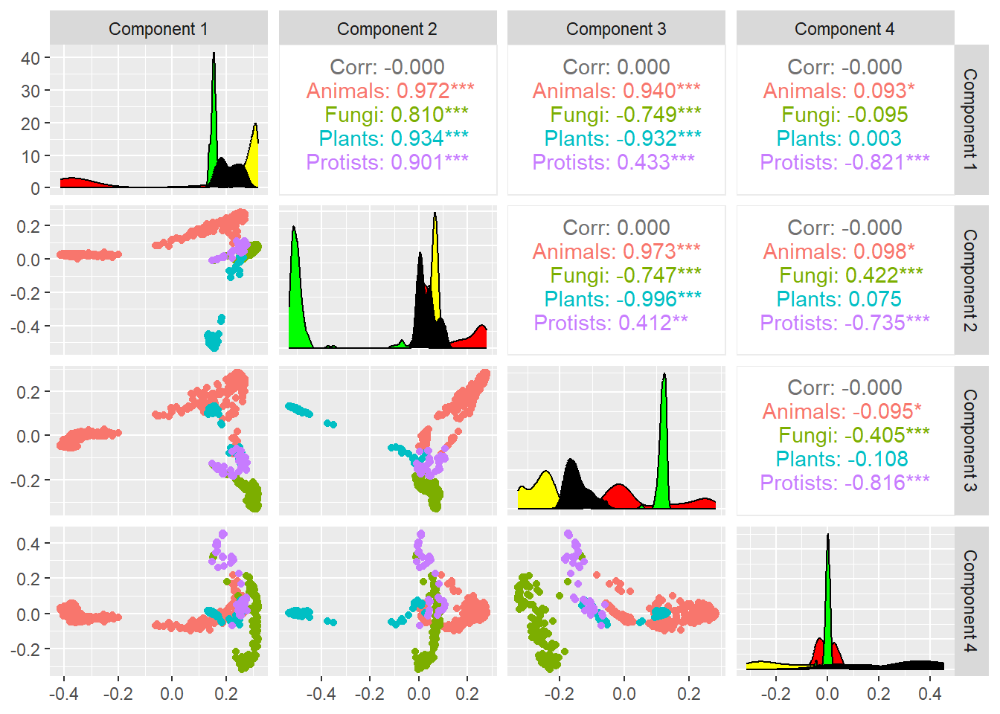
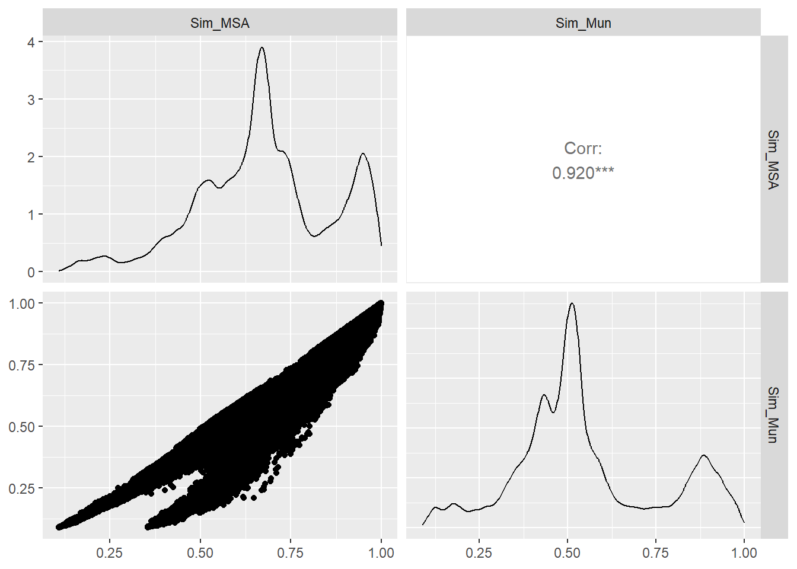
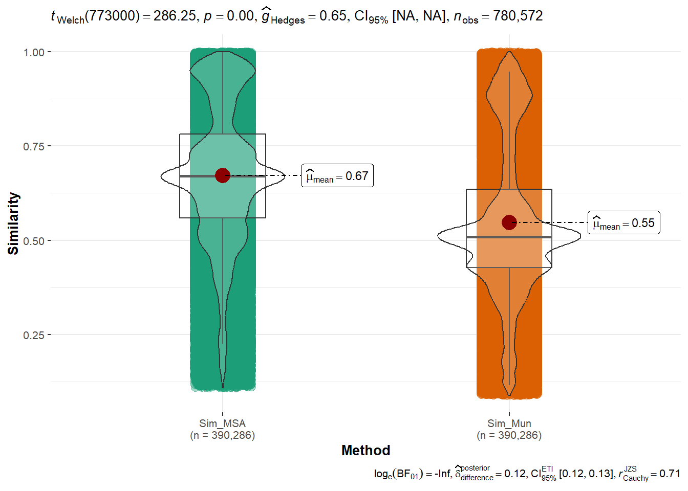
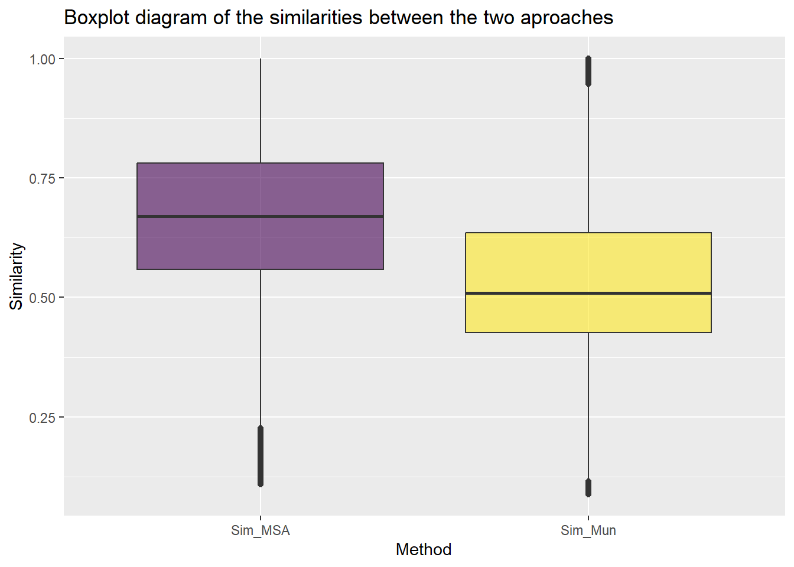

Code
load(file='metadag_work_space.RData')load(file='metadag_work_space.RData')First, we will load the metadata and adjust them to match the structure of the similarities. This will facilitate the creation of graphs and statistics.
Keep in mind the path of the experiment:
experiment=
"result_0a845f74-826e-3b46-aed9-e7ecf74db262/"
path_exp=paste0("data/",experiment)In this section, we will present the similarities between m-DAGs considering the two similarity meausures described in the paper. Namely, the MSA and Munkres similarities.
The experimental data set consists of 1132 Eukaryotes from the animal, plant, fungus, and protists kingdoms.
| Kingdom | Abs. Freq. |
|---|---|
| Animals | 535 |
| Fungi | 154 |
| Plants | 139 |
| Protists | 56 |
The similarity values are provided in the following files:
list_Sim=dir(path_exp,pattern="^Similarities")
list_Sim[1] "Similarities_MBB_MSAMethod.csv" "Similarities_MBB_MunkresMethod.csv"
[3] "Similarities_mDAG_MSAMethod.csv" "Similarities_mDAG_MunkresMethod.csv"Load the m-DAGs similarities
Sim_MSA_mDAG=read_csv(paste0(path_exp,
"Similarities_mDAG_MSAMethod.csv"))
Sim_MSA_mDAG=as.matrix(Sim_MSA_mDAG[,-1])
rownames(Sim_MSA_mDAG)=colnames(Sim_MSA_mDAG)
Sim_MSA_mDAG=Sim_MSA_mDAG[meta_taxo$mDAG_Id[1:884],
meta_taxo$mDAG_Id[1:884]]Sim_Mun_mDAG=read_csv(paste0(path_exp,"Similarities_mDAG_MunkresMethod.csv"))
Sim_Mun_mDAG=as.matrix(Sim_Mun_mDAG[,-1])
rownames(Sim_Mun_mDAG)=colnames(Sim_Mun_mDAG)
Sim_Mun_mDAG=Sim_Mun_mDAG[meta_taxo$mDAG_Id[1:884],meta_taxo$mDAG_Id[1:884]]Here, we provide examples of heatmaps to visualize the similarities betweem m-DAGs. We again consider colors to represent the different Kingdoms.
dff<-meta_taxo[1:884,] %>% select(Kingdom) %>% as.data.frame()
colorsK <- list(Kingdom= c("Animals"="red",
"Plants"="green",
"Fungi"="yellow",
"Protists"="black"))
annotationK <- HeatmapAnnotation(df=dff, col = colorsK,show_legend = TRUE)
MSA_heat_1 <- Heatmap(matrix = Sim_MSA_mDAG,
column_title=
"m-DAGs MSA-similarity Eukaryotes by Kingdoms",
heatmap_legend_param=list(
title="Similarity",
at = seq(0,1,by=0.1)),
col=rev(viridis(256)),
cluster_rows = FALSE,
cluster_columns = FALSE,
top_annotation = annotationK,
show_column_names = FALSE,
show_row_names = FALSE,
left_annotation =
rowAnnotation(df = dff,
col = colorsK,
show_annotation_name=FALSE,
show_legend=FALSE
))
Mun_heat_1<- Heatmap(matrix = Sim_Mun_mDAG,
column_title="m-DAGs Munkres-similarity Eukaryotes by Kingdoms",
name = "Munkres Similarity",
heatmap_legend_param=list(
title="Similarity",
at = seq(0,1,by=0.1)),
col=rev(viridis(256)),
cluster_rows = FALSE,
cluster_columns = FALSE,
top_annotation = annotationK,
show_column_names = FALSE,
show_row_names = FALSE,
left_annotation =
rowAnnotation(df = dff,
col = colorsK,
show_annotation_name=FALSE,
show_legend=FALSE
))meta_animals= meta_taxo[1:884,] %>% filter(Kingdom=="Animals")
dff<-meta_taxo %>%
filter(Kingdom=="Animals") %>%
select(Phylum,Freq_Phylum) %>%
as.data.frame() %>% select(Phylum)
namesP=dff %>% distinct( Phylum, .keep_all = TRUE)
namesP=namesP$Phylum
dff$Phylum=ordered(dff$Phylum,labels=namesP)
col=rainbow(length(namesP))
colorsP=list(Phylum=col)
names(colorsP$Phylum)=namesP
annotation_H2 <- HeatmapAnnotation(df=dff, col = colorsP)
MSA_heat_2 <- Heatmap(matrix =
Sim_MSA_mDAG[1:nrow(dff),1:nrow(dff)],
column_title="m-DAGs MSA-similarity Animals by Phyla",
col=rev(viridis(256)),
cluster_rows = FALSE,
show_heatmap_legend=FALSE,
cluster_columns = FALSE,
top_annotation = annotation_H2,
show_column_names = FALSE,
show_row_names = FALSE,
left_annotation =
rowAnnotation(df = dff,
col = colorsP,
show_annotation_name=FALSE,
show_legend =FALSE
))
Mun_heat_2 <- Heatmap(matrix = Sim_Mun_mDAG[1:nrow(dff),1:nrow(dff)],
column_title="m-DAGs Munkres-similarity Animals by Phyla",
col=rev(viridis(256)),
show_heatmap_legend=FALSE,
cluster_rows = FALSE,
cluster_columns = FALSE,
top_annotation = annotation_H2,
show_column_names = FALSE,
show_row_names = FALSE,
left_annotation = rowAnnotation(df = dff,
col = colorsP,
show_annotation_name=FALSE,
show_legend =FALSE
))MSA_heat_1
MSA_heat_2
Mun_heat_1
Mun_heat_2
Multi-dimensional Scaling (MDS) is a classic multivariate data analysis technique that allows for obtaining a low-dimensional representation of the observed similarities. First, we transform each similarity measure into a distance measure as follows: let \(s_{ij}\) be a similarity measure between a pair \(i,j\), we define its distance measure as \(d_{ij}=\sqrt{1-s_{ij}^2}\).
The following is the MDS for the MSA distance:
## Metric multidimensional scaling (mMDS)
mds7 <- cmdscale(sqrt(1-Sim_MSA_mDAG^2),k=7,eig=TRUE)
mds7$GOF[1] 0.4449519 0.5570199mds <- mds7$points %>% as_tibble()
colnames(mds) <-paste0("Dim.",1:dim(mds7$points)[2])
cooordinates=as_tibble(mds7$points)
colnames(cooordinates)=paste("Component",1:7)
ggpairs(cooordinates,columns=1:4,
aes(color=meta_taxo$Kingdom[1:884],
title="MDS 4 dimensions projection",legend=1),
lower=list(continuous="points")) +
scale_fill_manual(values = colorsK$Kingdom) +
theme(legend.position = "left")
The following is the MDS for the Munkres distance:
## Metric multidimensional scaling
mds7 <- cmdscale(sqrt(1-Sim_Mun_mDAG^2),k=7,eig=TRUE)
mds7$GOF[1] 0.5605691 0.5800736mds <- mds7$points %>% as_tibble()
colnames(mds) <-paste0("Dim.",1:dim(mds7$points)[2])
cooordinates=as_tibble(mds7$points)
colnames(cooordinates)=paste("Component",1:7)
ggpairs(cooordinates,columns=1:4,
aes(color=meta_taxo$Kingdom[1:884],
title="MDS 4 dimensions projection",legend=1),
lower=list(continuous="points")) +
scale_fill_manual(values = colorsK$Kingdom) +
theme(legend.position = "left")
Through hierarchical clustering using the Ward method, we have derived a partition of the m-DAGs into 4, 5, and 6 clusters, respectively. The corresponding information has been organized into a table, as follows:
D=as.dist(sqrt(1-Sim_MSA_mDAG^2))
hc_MSA=hclust(as.dist(D),method ="ward.D")
clust4_MSA=cutree(hc_MSA,4)
table(clust4_MSA,meta_taxo$Kingdom[1:884])
clust4_MSA Animals Fungi Plants Protists
1 331 0 0 0
2 197 0 0 0
3 7 154 14 56
4 0 0 125 0clust5_MSA=cutree(hc_MSA,5)
table(clust5_MSA,meta_taxo$Kingdom[1:884])
clust5_MSA Animals Fungi Plants Protists
1 129 0 0 0
2 202 0 0 0
3 197 0 0 0
4 7 154 14 56
5 0 0 125 0clust6_MSA=cutree(hc_MSA,6)
table(clust6_MSA,meta_taxo$Kingdom[1:884])
clust6_MSA Animals Fungi Plants Protists
1 129 0 0 0
2 202 0 0 0
3 197 0 0 0
4 7 149 14 34
5 0 5 0 22
6 0 0 125 0We can also create a table that correlates the clusters (in this case, two clusters) with the Phylum classification:
aux=meta_taxo[1:884,] %>%
select(Organism,Kingdom,Phylum,Class,Full_Name)
aux$clust4_MSA=clust4_MSA
aux_Animals_cluster_1_2 = aux %>%
filter(Kingdom=="Animals",clust4_MSA %in% c(1,2))
table(aux_Animals_cluster_1_2$Phylum,aux_Animals_cluster_1_2$clust4_MSA)
1 2
Annelids 0 1
Arthropods 0 158
Brachiopodas 0 1
Cephalochordates 0 2
Cnidarians 0 10
Echinoderms 0 3
Hemichordates 0 1
Mollusks 0 14
Nematodes 0 3
Placozoans 0 1
Poriferans 0 1
Tunicates 0 2
Vertebrates 331 0We can retrieve the information of the elements belonging to a specific classification (Animals and Plants) that are part of a particular cluster as follows:
aux_7_Animals_cluster_3= filter(aux,
clust4_MSA==3,
Kingdom=="Animals")
aux_7_Animals_cluster_3# A tibble: 7 × 6
Organism Kingdom Phylum Class Full_Name clust4_MSA
<chr> <chr> <chr> <chr> <chr> <int>
1 bmy Animals Nematodes Nematodes Brugia malayi (filaria) 3
2 loa Animals Nematodes Nematodes Loa loa (eye worm) 3
3 tsp Animals Nematodes Nematodes Trichinella spiralis 3
4 egl Animals Flatworms Flatworms Echinococcus granulosus (hyda… 3
5 ovi Animals Flatworms Flatworms Opisthorchis viverrini (South… 3
6 shx Animals Flatworms Flatworms Schistosoma haematobium (urin… 3
7 smm Animals Flatworms Flatworms Schistosoma mansoni 3aux_14_Plants_clust_3= filter(aux,clust4_MSA==3,
Kingdom=="Plants")
aux_14_Plants_clust_3# A tibble: 14 × 6
Organism Kingdom Phylum Class Full_Name clust4_MSA
<chr> <chr> <chr> <chr> <chr> <int>
1 apro Plants Green algae Auxenochlorella protothecoides 3
2 bpg Plants Green algae Bathycoccus prasinos 3
3 cre Plants Green algae Chlamydomonas reinhardtii 3
4 csl Plants Green algae Coccomyxa subellipsoidea 3
5 cvr Plants Green algae Chlorella variabilis 3
6 mis Plants Green algae Micromonas commoda 3
7 mng Plants Green algae Monoraphidium neglectum 3
8 mpp Plants Green algae Micromonas pusilla 3
9 olu Plants Green algae Ostreococcus lucimarinus 3
10 ota Plants Green algae Ostreococcus tauri 3
11 vcn Plants Green algae Volvox carteri f. nagariensis 3
12 ccp Plants Red algae Chondrus crispus (carragheen) 3
13 cme Plants Red algae Cyanidioschyzon merolae 3
14 gsl Plants Red algae Galdieria sulphuraria 3We can retrieve the information of the elements from a specific Phylum or Class, and the cluster they belong to, as follows:
aux_all_Nematodes_Flatworns= aux %>%
filter(Kingdom=="Animals",
Phylum %in% c("Nematodes","Flatworms"))
aux_all_Nematodes_Flatworns# A tibble: 10 × 6
Organism Kingdom Phylum Class Full_Name clust4_MSA
<chr> <chr> <chr> <chr> <chr> <int>
1 bmy Animals Nematodes Nematodes Brugia malayi (filaria) 3
2 cbr Animals Nematodes Nematodes Caenorhabditis briggsae (nem… 2
3 cel Animals Nematodes Nematodes Caenorhabditis elegans (nema… 2
4 loa Animals Nematodes Nematodes Loa loa (eye worm) 3
5 nai Animals Nematodes Nematodes Necator americanus (New Worl… 2
6 tsp Animals Nematodes Nematodes Trichinella spiralis 3
7 egl Animals Flatworms Flatworms Echinococcus granulosus (hyd… 3
8 ovi Animals Flatworms Flatworms Opisthorchis viverrini (Sout… 3
9 shx Animals Flatworms Flatworms Schistosoma haematobium (uri… 3
10 smm Animals Flatworms Flatworms Schistosoma mansoni 3The class Algae are all in the same cluster:
aux_all_algae_class= aux %>%
filter(Kingdom=="Plants",
Class %in% c("algae"))
aux_all_algae_class# A tibble: 14 × 6
Organism Kingdom Phylum Class Full_Name clust4_MSA
<chr> <chr> <chr> <chr> <chr> <int>
1 apro Plants Green algae Auxenochlorella protothecoides 3
2 bpg Plants Green algae Bathycoccus prasinos 3
3 cre Plants Green algae Chlamydomonas reinhardtii 3
4 csl Plants Green algae Coccomyxa subellipsoidea 3
5 cvr Plants Green algae Chlorella variabilis 3
6 mis Plants Green algae Micromonas commoda 3
7 mng Plants Green algae Monoraphidium neglectum 3
8 mpp Plants Green algae Micromonas pusilla 3
9 olu Plants Green algae Ostreococcus lucimarinus 3
10 ota Plants Green algae Ostreococcus tauri 3
11 vcn Plants Green algae Volvox carteri f. nagariensis 3
12 ccp Plants Red algae Chondrus crispus (carragheen) 3
13 cme Plants Red algae Cyanidioschyzon merolae 3
14 gsl Plants Red algae Galdieria sulphuraria 3Analogous to the MSA similarity we obtain a classification of the m-DAGs into different clusters and retrieve the cluster’s information as follows:
D=as.dist(sqrt(1-Sim_Mun_mDAG^2))
hc_Mun=hclust(as.dist(D),method ="ward.D")clust4_Mun=cutree(hc_Mun,4)
table(clust4_Mun,meta_taxo$Kingdom[1:884])
clust4_Mun Animals Fungi Plants Protists
1 331 0 0 0
2 197 0 0 0
3 7 154 14 56
4 0 0 125 0aux=meta_taxo[1:884,] %>%
select(Organism,Kingdom,Phylum,Class,Full_Name)
aux$clust4_Mun=clust4_Mun
aux_Animals_cluster_1_2_Mun = aux %>%
filter(Kingdom=="Animals",clust4_Mun %in% c(1,2))
table(aux_Animals_cluster_1_2_Mun$Phylum,
aux_Animals_cluster_1_2_Mun$clust4_Mun)
1 2
Annelids 0 1
Arthropods 0 158
Brachiopodas 0 1
Cephalochordates 0 2
Cnidarians 0 10
Echinoderms 0 3
Hemichordates 0 1
Mollusks 0 14
Nematodes 0 3
Placozoans 0 1
Poriferans 0 1
Tunicates 0 2
Vertebrates 331 0aux_7_Animals_cluster_3_Mun= filter(aux,
clust4_Mun==3,
Kingdom=="Animals")
aux_7_Animals_cluster_3_Mun# A tibble: 7 × 6
Organism Kingdom Phylum Class Full_Name clust4_Mun
<chr> <chr> <chr> <chr> <chr> <int>
1 bmy Animals Nematodes Nematodes Brugia malayi (filaria) 3
2 loa Animals Nematodes Nematodes Loa loa (eye worm) 3
3 tsp Animals Nematodes Nematodes Trichinella spiralis 3
4 egl Animals Flatworms Flatworms Echinococcus granulosus (hyda… 3
5 ovi Animals Flatworms Flatworms Opisthorchis viverrini (South… 3
6 shx Animals Flatworms Flatworms Schistosoma haematobium (urin… 3
7 smm Animals Flatworms Flatworms Schistosoma mansoni 3aux_all_Nematodes_Flatworns= aux %>%
filter(Kingdom=="Animals",
Phylum %in% c("Nematodes","Flatworms"))
aux_all_Nematodes_Flatworns# A tibble: 10 × 6
Organism Kingdom Phylum Class Full_Name clust4_Mun
<chr> <chr> <chr> <chr> <chr> <int>
1 bmy Animals Nematodes Nematodes Brugia malayi (filaria) 3
2 cbr Animals Nematodes Nematodes Caenorhabditis briggsae (nem… 2
3 cel Animals Nematodes Nematodes Caenorhabditis elegans (nema… 2
4 loa Animals Nematodes Nematodes Loa loa (eye worm) 3
5 nai Animals Nematodes Nematodes Necator americanus (New Worl… 2
6 tsp Animals Nematodes Nematodes Trichinella spiralis 3
7 egl Animals Flatworms Flatworms Echinococcus granulosus (hyd… 3
8 ovi Animals Flatworms Flatworms Opisthorchis viverrini (Sout… 3
9 shx Animals Flatworms Flatworms Schistosoma haematobium (uri… 3
10 smm Animals Flatworms Flatworms Schistosoma mansoni 3aux_14_Plants_clust2_Mun= filter(aux,clust4_Mun==3,
Kingdom=="Plants")
aux_14_Plants_clust2_Mun# A tibble: 14 × 6
Organism Kingdom Phylum Class Full_Name clust4_Mun
<chr> <chr> <chr> <chr> <chr> <int>
1 apro Plants Green algae Auxenochlorella protothecoides 3
2 bpg Plants Green algae Bathycoccus prasinos 3
3 cre Plants Green algae Chlamydomonas reinhardtii 3
4 csl Plants Green algae Coccomyxa subellipsoidea 3
5 cvr Plants Green algae Chlorella variabilis 3
6 mis Plants Green algae Micromonas commoda 3
7 mng Plants Green algae Monoraphidium neglectum 3
8 mpp Plants Green algae Micromonas pusilla 3
9 olu Plants Green algae Ostreococcus lucimarinus 3
10 ota Plants Green algae Ostreococcus tauri 3
11 vcn Plants Green algae Volvox carteri f. nagariensis 3
12 ccp Plants Red algae Chondrus crispus (carragheen) 3
13 cme Plants Red algae Cyanidioschyzon merolae 3
14 gsl Plants Red algae Galdieria sulphuraria 3aux_all_algae_class= aux %>%
filter(Kingdom=="Plants",
Class %in% c("algae"))
aux_all_algae_class# A tibble: 14 × 6
Organism Kingdom Phylum Class Full_Name clust4_Mun
<chr> <chr> <chr> <chr> <chr> <int>
1 apro Plants Green algae Auxenochlorella protothecoides 3
2 bpg Plants Green algae Bathycoccus prasinos 3
3 cre Plants Green algae Chlamydomonas reinhardtii 3
4 csl Plants Green algae Coccomyxa subellipsoidea 3
5 cvr Plants Green algae Chlorella variabilis 3
6 mis Plants Green algae Micromonas commoda 3
7 mng Plants Green algae Monoraphidium neglectum 3
8 mpp Plants Green algae Micromonas pusilla 3
9 olu Plants Green algae Ostreococcus lucimarinus 3
10 ota Plants Green algae Ostreococcus tauri 3
11 vcn Plants Green algae Volvox carteri f. nagariensis 3
12 ccp Plants Red algae Chondrus crispus (carragheen) 3
13 cme Plants Red algae Cyanidioschyzon merolae 3
14 gsl Plants Red algae Galdieria sulphuraria 3In order to compare the two similarities we consider the Spearman and Pearson correlation. First, we load the similarities for every pair of m-DAG and each similarity measure.
n=length(meta_taxo$mDAG_Id[1:884])
n[1] 884dim(Sim_MSA_mDAG)[1] 884 884aux=as_tibble(Sim_MSA_mDAG)
aux$mDag=names(aux)
aux=aux %>% pivot_longer(cols=`0313`:`0300`,
names_to="mDag_2",
values_to="Sim_MSA")
aux_2= aux %>% mutate(i=pmax(as.integer(mDag),
as.integer(mDag_2)),
j=pmin(as.integer(mDag),
as.integer(mDag_2))) %>% unite("ij",i:j) %>%
filter(duplicated(ij))
aux=as_tibble(Sim_Mun_mDAG)
aux$mDag=names(aux)
aux=aux %>% pivot_longer(cols=`0313`:`0300`,
names_to="mDag_2",
values_to="Sim_Mun")
aux_2 = aux_2 %>% left_join(aux)
Sim_comp=aux_2
rm(aux,aux_2)Next we obtain the Spearman and Pearson correlations as follows:
cor(Sim_comp[,c(3,5)],method="spearman") Sim_MSA Sim_Mun
Sim_MSA 1.0000000 0.8930995
Sim_Mun 0.8930995 1.0000000cor(Sim_comp[,c(3,5)],method="pearson") Sim_MSA Sim_Mun
Sim_MSA 1.0000000 0.9203871
Sim_Mun 0.9203871 1.0000000GGally::ggpairs(Sim_comp[,c(3,5)])
sim_pairs= Sim_comp%>% pivot_longer(
cols=c(Sim_MSA,Sim_Mun),
names_to="Method",
values_to="Similarity")
ggstatsplot::ggbetweenstats(
data = sim_pairs,
x = Method,
y = Similarity,
centrality.plotting=TRUE)
library(hrbrthemes)
library(viridis)
sim_pairs %>%
ggplot( aes(x=Method, y=Similarity, fill=Method)) +
geom_boxplot() +
scale_fill_viridis(discrete = TRUE, alpha=0.6) +
theme(legend.position="none")+
ggtitle("Boxplot diagram of the similarities between the two aproaches") 
Basic statistics similarity
sim_pairs %>% group_by(Method) %>%
summarise(N=n(),
mean=mean(Similarity),
sd=sd(Similarity),
Q1=quantile(Similarity,0.25),
median=quantile(Similarity,0.5),
Q3=quantile(Similarity,0.75))# A tibble: 2 × 7
Method N mean sd Q1 median Q3
<chr> <int> <dbl> <dbl> <dbl> <dbl> <dbl>
1 Sim_MSA 390286 0.672 0.182 0.559 0.670 0.781
2 Sim_Mun 390286 0.547 0.202 0.427 0.509 0.635